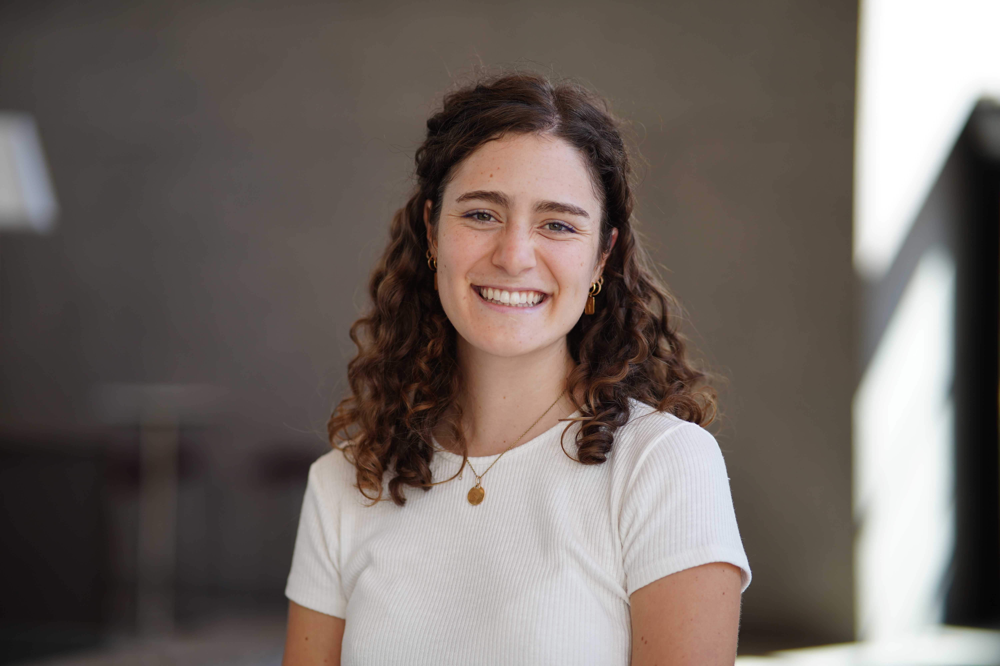

maynard.co@northeastern.edu
Courtney Maynard (she/her)
2nd Year Computer Science PhD Student @ Northeastern Khoury College of Computer Science & affiliated with the Network Science Institute.
I am advised by Prof. Tina Eliassi-Rad in the RADLAB. My research interests lie in mechanistic interpretability, particularly circuit learning and any other place where I can fit in some graphs/graph neural networks! I am motivated by a desire to ensure that new LLM and their systems are not only understandable by the general population, but used safely. Particularly, I am interested in problems surrounding belief representation in LLMs and persona modeling. I am also passionate about public impact and social good projects. Prior to joining Northeastern, I received my B.S. in Data Science from William & Mary, where I was a part of the geoLab.
Papers:
Can Graph Learning Learn Circuits?
Tan, C.*, Lampert, M.*, Maynard, C.*, Ramakrishnan, A., Eliassi-Rad, T., & Scholtes, I. (2026). Can Graph Learning Learn Circuits?. arXiv preprint arXiv:2608.08536.
Belief Coevolution in a Social Network of Generalist and Specialist Large Language Models
Savcisens, G., Dies, S., Maynard, C., & Eliassi-Rad, T. (2026). Belief Coevolution in a Social Network of Generalist and Specialist Large Language Models. arXiv preprint arXiv:2607.27512.
Epistemic Familiarity is Associated With Belief Stability in Large Language Models
This paper has been accepted to Findings of EMNLP and will be updated soon!
Dies, S., Maynard, C., Savcisens, G., & Eliassi-Rad, T. (2026). Epistemic Familiarity is Associated With Belief Stability in Large Language Models. arXiv preprint arXiv:2511.19166.
Appearing and Disappearing in the Data: Emotional Configurations Within Children's Data Modeling Practices
Lanouette, Kathryn & Church, Megan & Maynard, Courtney. (2023). Appearing and Disappearing in the Data: Emotional Configurations Within Children’s Data Modeling Practices. 1402-1405. 10.22318/icls2023.389667.
- September 9th, 2026: I start my 2nd year as a PhD student!
- August 21st, 2026: Our paper "Epistemic Familiarity is Associated With Belief Stability in Large Language Models" has been accepted to Findings of EMNLP.
- August 14th, 2026: I presented our new arXiv paper, "Can Graph Learning Learn Circuits?" as a poster at the Northeastern Mechanistic Interpretability Workshop in Boston, MA.
- July 31st, 2026: I wrapped up my summer as a Data Science for Social Good Fellow in partnership with Johns Hopkins University!
- July 30th, 2026: I presented my teams fellowship project, "Motivating Signal Policy Changes with Mobility Data Extracted from Traffic Cameras" at DSSG DataFest 2026 in Baltimore, MD.
- July 29th, 2026: We have a new preprint on arXiv: "Belief Coevolution in a Social Network of Generalist and Specialist Large Language Models".
- November 24th, 2025: We have a new preprint on arXiv: "Representational and Behavioral Stability of Truth in Large Language Models".
- September 3rd, 2025: I started my PhD at Northeastern University!
- May 17th, 2025: I graduated from William & Mary with a B.S. in Data Science, Summa Cum Laude. Go Tribe!
- May 8th, 2025: I defended my Honors Thesis, "Synchronizing Graph and Embedding Representations of Lyrical Data with Graph Neural Networks and Developing a Classification-to-Generation Workflow For Genre-Specific Songs" with Highest Honors! Thank you to my committee!
Extras!
- I am an avid long distance runner. You can often find me running on the Charles River Esplanade at sunset. I am currently training for the Boston Half Marathon.
- I sing, play guitar, and write music. My undergraduate honors thesis was inspired by my love for songwriting.
Can Graph Learning Learn Circuits?
Tan, C.*, Lampert, M.*, Maynard, C.*, Ramakrishnan, A., Eliassi-Rad, T., & Scholtes, I. (2026). Can Graph Learning Learn Circuits?. arXiv preprint arXiv:2608.08536.Belief Coevolution in a Social Network of Generalist and Specialist Large Language Models
Savcisens, G., Dies, S., Maynard, C., & Eliassi-Rad, T. (2026). Belief Coevolution in a Social Network of Generalist and Specialist Large Language Models. arXiv preprint arXiv:2607.27512.Epistemic Familiarity is Associated With Belief Stability in Large Language Models
This paper has been accepted to Findings of EMNLP and will be updated soon! Dies, S., Maynard, C., Savcisens, G., & Eliassi-Rad, T. (2026). Epistemic Familiarity is Associated With Belief Stability in Large Language Models. arXiv preprint arXiv:2511.19166.Appearing and Disappearing in the Data: Emotional Configurations Within Children's Data Modeling Practices
Lanouette, Kathryn & Church, Megan & Maynard, Courtney. (2023). Appearing and Disappearing in the Data: Emotional Configurations Within Children’s Data Modeling Practices. 1402-1405. 10.22318/icls2023.389667.- September 9th, 2026: I start my 2nd year as a PhD student!
- August 21st, 2026: Our paper "Epistemic Familiarity is Associated With Belief Stability in Large Language Models" has been accepted to Findings of EMNLP.
- August 14th, 2026: I presented our new arXiv paper, "Can Graph Learning Learn Circuits?" as a poster at the Northeastern Mechanistic Interpretability Workshop in Boston, MA.
- July 31st, 2026: I wrapped up my summer as a Data Science for Social Good Fellow in partnership with Johns Hopkins University!
- July 30th, 2026: I presented my teams fellowship project, "Motivating Signal Policy Changes with Mobility Data Extracted from Traffic Cameras" at DSSG DataFest 2026 in Baltimore, MD.
- July 29th, 2026: We have a new preprint on arXiv: "Belief Coevolution in a Social Network of Generalist and Specialist Large Language Models".
- November 24th, 2025: We have a new preprint on arXiv: "Representational and Behavioral Stability of Truth in Large Language Models".
- September 3rd, 2025: I started my PhD at Northeastern University!
- May 17th, 2025: I graduated from William & Mary with a B.S. in Data Science, Summa Cum Laude. Go Tribe!
- May 8th, 2025: I defended my Honors Thesis, "Synchronizing Graph and Embedding Representations of Lyrical Data with Graph Neural Networks and Developing a Classification-to-Generation Workflow For Genre-Specific Songs" with Highest Honors! Thank you to my committee!